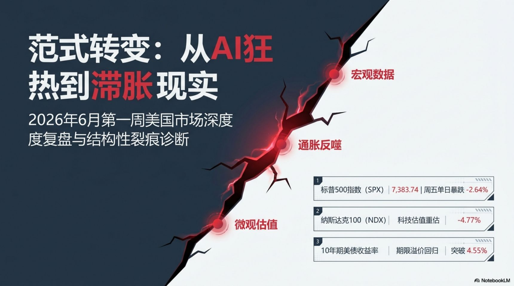

Records on Monday and Tuesday, a wobble Wednesday, a healthy rotation Thursday — then Friday's hot jobs report (172k vs ~85k) detonated the whole structure. The S&P fell 2.64%, the Nasdaq 100 4.77%, the VIX exploded 40% to 21.51, and the rotation that had been so orderly gave way to a broad, stagflationary risk-off. Step through the five days below.
Weekly Bias
Bearish — reduce risk
Leadership
Defensive (XLP·XLU·XLV)
Regime Shift
No-Landing → Stagflation
VIX
16 → 21.51 (+40%)
Next Catalyst
CPI Jun 10 · FOMC Jun 16–17
The week in one line per day
Five sessions, a complete regime change
Records → wobble → rotation → collapse. The macro data ran hot all week; Friday's NFP was the straw that broke it.
Hover any bar. Note how Thursday's broad green flipped to Friday's broad red once the jobs number hit.
Nasdaq series uses Composite for Jun 1–4 and Nasdaq 100 for Jun 5 (the Friday report quotes NDX −4.77%). QQQ closed −0.7% on Jun 4.
Macro dashboard
The pressure built all week — pick a gauge
Every macro dial moved against equities into Friday: yields up, dollar up, volatility up, hike odds up.
Condition ratings
Seven-category rating matrix · the full week
Click any row for the interpretation behind the ratings.
Category
Jun 1
Jun 2
Jun 3
Jun 4
Jun 5
Week's path
Friday's hinge · the NFP shock
"Good news is bad news" — the jobs print that ended the rally
May payrolls more than doubled expectations, with +93k of upward revisions. The market read it as: no rate cuts, possibly hikes. Everything long-duration broke.
Beneath the headline: jobs were concentrated in leisure/hospitality (+70k, World Cup prep), local government (+55k) and health care (+35k); financial activities lost 22k; long-term unemployed (27+ weeks) rose to 27.5% from 20.4% a year ago. A strong headline over a softening core.
Sector rotation board
Eleven sectors plus semiconductors, across the week
Energy and tech led early; by Friday the only green was defensive. Sort to see the trajectory.
Sector
Jun 1
Jun 2
Jun 3
Jun 4
Jun 5
Path
Style rotation
Where leadership ended the week
Bars show conviction of the 5-day shift. By Friday the market paid only for safety and yield.
▲ Held up / gained
▼ Lost / broke
Two readings — and which one won
Bull case vs bear case (the bear case won on Friday)
The three-day report flagged the hot-NFP bear scenario as the top risk. Friday delivered it. Toggle to compare.
Valuation tracking · SPX after Friday
Cheaper than Thursday — still a premium
Friday's −2.64% took SPX to ~7,384. That trimmed the multiple but did not make it cheap: still ~20–22x forward earnings depending on the EPS estimate. Pick an EPS basis to recompute the ladder and DCA zone.
Forward P/E band ladder & DCA zones
External reference points
DCA read
Anchor: StreetStats had SPX 7,584.31 on Jun 4 with forward P/E 20.85x, forward EPS $363.75, trailing EPS $296.16. Applying Friday's −2.64% gives SPX ~7,384 → forward P/E ~20.3x, trailing ~24.9x. Band ladder computes P/E = level ÷ selected EPS; zones are P/E-based.
Strategy progression
How the playbook evolved across the week
From "participate but protect" to "reduce risk" — the call tightened each day and was vindicated Friday.
Strategy question
Mon–Tue
Wed
Thu
Fri
End-of-week call
Strategic deck · 范式转变
The 2026 Market Paradigm Shift — companion slide deck
15-slide strategic briefing on the full week, "from AI mania to stagflation reality" (Chinese). Built directly on the Jun 1–5 data this page covers. Navigate with arrows, dots, or keyboard · open the full PDF ↗

1 / 10
Watchlist · post-NFP
Key signals to watch next week
The whole tape now hinges on yields, CPI, and the FOMC. Each signal expands into its bullish vs bearish read.
The week ahead · Jun 9–13
The data runway before the FOMC runway
Friday's rout turned next week into a minefield — CPI and PPI feed straight into the Jun 16–17 FOMC, marquee tech earnings (Oracle, Adobe) test the AI story, and the largest IPO in history (SpaceX) prices Thu and debuts Fri. Click any event for why it matters.
The earnings bar is brutally high. S&P 500 Q1 2026 earnings growth is tracked near +28.4% y/y (FactSet) — the strongest since Q4 2021. With expectations that elevated, even solid beats that don't dramatically clear the bar get sold, exactly as Broadcom (−15%, ~$320B wiped) showed Friday. The week's theme: AI monetization credibility — revenue, not capex promises.
Three macro fault lines into next week
How to read each outcome
Dec rate-hike odds cited by this source: 68.4% (up from 52% the prior day) — higher than the 43–50% range in Friday's recap; both reflect the same post-NFP repricing toward a hike. Day-of-week labels follow the calendar (Jun 1 = Monday).
Other market factors · beyond the calendar
Six forces that will steer next week's direction
The scheduled data is only half the picture. These positioning, volatility, and geopolitical factors can amplify or reverse any print. Click each to expand its bull/bear triggers.
The binary that defines the week: the dominant regime is "good data = bad market." A soft CPI (≤3.8% y/y) could trigger a sharp short-covering relief rally given record hedge-fund shorts; a hot print (≥4.2% as RBC forecasts) validates a new leg down with oil, the dollar, and yields all working against equities at once. One more structural marker: Jun 18 is Triple Witching (moved up from the 19th for Juneteenth) — expect gamma-amplified swings into expiry.
Source notes: Russell 2000 Jun 1 close (2,817.36) does not reconcile with Jun 2's +0.90% to 2,931.96; Nasdaq is reported as Composite some days and NDX/QQQ others; AVGO's earnings reaction and LULU's guidance cut appear on both Jun 4 and Jun 5. Directional conclusions are unaffected; daily % changes are each cited within their own report.